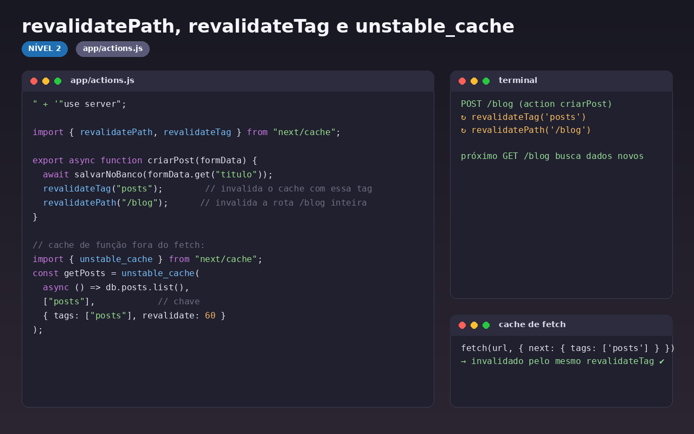

Cache e revalidação
A Ana 👩💻 tinha um blog cacheado por 60 segundos. Ela publicava um post novo, clicava no blog… e continuava vendo a versão antiga. O problema: o cache estava velho demais sem ninguém avisar. Nesta página você aprende a invalidar o cache na hora certa: revalidatePath para rotas inteiras, revalidateTag para as etiquetas do fetch, e unstable_cache para cachear funções suas que não usam fetch.
revalidatePath("/blog")dentro de uma Server Action, depois de salvarrevalidateTag("posts")e a etiquetanext: { tags: […] }do fetchunstable_cachepara embrulhar funções (ex: consulta ao banco)- Onde essas funções podem ser chamadas (só no servidor)
A ideia: a vitrine da loja e o botão "atualizar agora"
Uma loja coloca os produtos numa vitrine de vidro: enquanto ninguém mexe, a vitrine mostra o que foi montado (isso é o cache). Quando chega produto novo, o funcionário não precisa trocar a loja inteira — ele só tira a etiqueta do produto da vitrine e a próxima pessoa que olhar já vê o preço novo. Esse "tirar a etiqueta" é o revalidateTag("posts"): você batiza um conjunto de caches com uma etiqueta e, quando chama a função com essa etiqueta, todos eles são descartados de uma vez.
Se a mudança é maior — mudou o layout da seção inteira, o menu, a home — aí o funcionário troca a vitrine inteira: é o revalidatePath("/blog"), que limpa o cache de uma rota específica (e, com "/blog", "layout", todas as páginas abaixo dela).
E quando a fonte de dados não é um fetch — é uma consulta direta no banco, uma leitura de arquivo? Aí não existe fetch para pendurar etiqueta, então você embrulha a sua função com unstable_cache, que faz o mesmo serviço: guarda o resultado, dá uma chave e aceita etiquetas e tempo de revalidação.
Invalidando depois de uma escrita (Server Action)
O fluxo completo: o usuário envia um formulário → a Server Action salva no banco → antes de responder, a action invalida o cache → a próxima visita já vê o dado novo:
"use server";
import { revalidatePath, revalidateTag } from "next/cache";
import { redirect } from "next/navigation";
export async function criarPost(formData) {
const titulo = formData.get("titulo");
await db.post.create({ titulo }); // salva no banco
revalidateTag("posts"); // invalida todo fetch com tags: ["posts"]
revalidatePath("/blog"); // invalida a rota /blog inteira (e abaixo, com "layout")
// revalidatePath("/", "layout") invalida TUDO abaixo da raiz
redirect("/blog"); // manda o navegador para a lista atualizada
}
Cacheando a própria função: unstable_cache
import { unstable_cache } from "next/cache";
async function buscarPostsNoBanco() {
// consulta direta no banco — não passa pelo fetch, então não tem cache automático
return db.post.findMany();
}
export const getPosts = unstable_cache(
buscarPostsNoBanco,
["posts"], // chave única do cache
{ tags: ["posts"], revalidate: 60 } // mesma ideia do fetch
);
// uso na página:
// const posts = await getPosts();
O unstable_cache guarda o resultado da função (tem que ser serializável — objetos puros, arrays, strings, números) e só recalcula quando a chave muda, quando passa o revalidate, ou quando alguém chama revalidateTag com a mesma etiqueta.
| Função | Onde chama | O que invalida |
|---|---|---|
revalidatePath("/blog") | Server Action / Route Handler | o cache da rota exata /blog |
revalidatePath("/blog", "layout") | Server Action / Route Handler | /blog e todas as rotas abaixo |
revalidateTag("posts") | Server Action / Route Handler | todo fetch/função com tags: ["posts"] |
unstable_cache(fn, ["chave"], { tags, revalidate }) | qualquer código de servidor | cache da sua função, por chave/etiqueta/tempo |
export const revalidate = 60 na página | na própria page.jsx | ISR por rota: recria a página em segundo plano após 60s |
Missão: a Ana tem um "cache" (um objeto) e uma função salvarPost que guarda no cache. Complete a função invalidarCache para apagar a chave do cache (use delete cache[chave]), simulando o revalidateTag. Rode: salve um post, invalide, e confira que a lista voltou vazia.
function App() {
// simulando o Data Cache do Next
const cache = {};
const [log, setLog] = React.useState([]);
function salvarPost(titulo) {
cache["posts"] = [{ titulo }];
setLog((l) => [...l, `salvo: ${titulo} (cache preenchido)`]);
}
// 👉 apague a chave "posts" do cache (é o revalidateTag)
function invalidarCache() {
setLog((l) => [...l, "cache invalidado ✔"]);
}
return (
<div style={{ fontFamily: "sans-serif", padding: 16 }}>
<button onClick={() => salvarPost("Post novo")}>Salvar post</button>
<button onClick={invalidarCache}>Invalidar cache (revalidateTag)</button>
<p>cache: {JSON.stringify(cache)}</p>
<ul>{log.map((l, i) => <li key={i}>{l}</li>)}</ul>
</div>
);
}function App() {
const cache = {};
const [log, setLog] = React.useState([]);
function salvarPost(titulo) {
cache["posts"] = [{ titulo }];
setLog((l) => [...l, `salvo: ${titulo} (cache preenchido)`]);
}
function invalidarCache() {
delete cache["posts"]; // revalidateTag("posts")
setLog((l) => [...l, "cache invalidado ✔"]);
}
return (
<div style={{ fontFamily: "sans-serif", padding: 16 }}>
<button onClick={() => salvarPost("Post novo")}>Salvar post</button>
<button onClick={invalidarCache}>Invalidar cache (revalidateTag)</button>
<p>cache: {JSON.stringify(cache)}</p>
<ul>{log.map((l, i) => <li key={i}>{l}</li>)}</ul>
</div>
);
}
revalidateTag("posts") e revalidatePath("/blog") — a próxima visita já vê o dado novo.Quando dá errado
revalidatePath/revalidateTag fora do servidor (num Client Component) — a importação até existe, mas a chamada falha:Error: Route "/" used revalidatePath. revalidatePath can only be called in a Server Action or Route Handler — not in a Client Component.
Tradução: revalidatePath só pode ser chamado numa Server Action ou Route Handler. Correção: mova a invalidação para dentro da sua action (depois do await db…) ou para dentro de uma rota de API. Outro erro sorrateiro: por tags no fetch mas chamar revalidateTag com a etiqueta errada — nada invalida e o cache segue velho. Sempre confira a ortografia da etiqueta.
Exercícios
1. O que revalidateTag("posts") faz?
2. Para invalidar /blog e todas as sub-rotas de uma vez, o que usar?
3. Complete: para cachear uma função própria que acessa o banco (sem fetch), qual função do next/cache você usa?